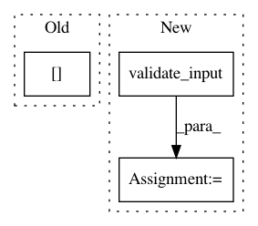

cdc9a95322aba5d0e42e2e920ce2c0ae76391f6b,scipy/interpolate/_cubic.py,PchipInterpolator,__init__,#PchipInterpolator#Any#Any#Any#Any#,220
Before Change
yp = np.rollaxis(y, axis)
dk = self._find_derivatives(xp, yp)
data = np.hstack((yp[:, None, ...], dk[:, None, ...]))
_b = BPoly.from_derivatives(x, data, orders=None)
super(PchipInterpolator, self).__init__(_b.c, _b.x,
After Change
def __init__(self, x, y, axis=0, extrapolate=None):
x, _, y, axis, _ = validate_input(x, y, axis)
xp = x.reshape((x.shape[0],) + (1,)*(y.ndim-1))
dk = self._find_derivatives(xp, y)
super(PchipInterpolator, self).__init__(x, y, dk, axis=0,
extrapolate=extrapolate)
In pattern: SUPERPATTERN
Frequency: 3
Non-data size: 3
Instances
Project Name: scipy/scipy
Commit Name: cdc9a95322aba5d0e42e2e920ce2c0ae76391f6b
Time: 2019-04-11
Author: nikolay.mayorov@zoho.com
File Name: scipy/interpolate/_cubic.py
Class Name: PchipInterpolator
Method Name: __init__
Project Name: scipy/scipy
Commit Name: 0a25daf47631b50eba9e29a7b2ff5509a51dfea9
Time: 2020-04-26
Author: asakai.amsl+github@gmail.com
File Name: scipy/interpolate/fitpack2.py
Class Name: InterpolatedUnivariateSpline
Method Name: __init__
Project Name: scipy/scipy
Commit Name: 0a25daf47631b50eba9e29a7b2ff5509a51dfea9
Time: 2020-04-26
Author: asakai.amsl+github@gmail.com
File Name: scipy/interpolate/fitpack2.py
Class Name: LSQUnivariateSpline
Method Name: __init__